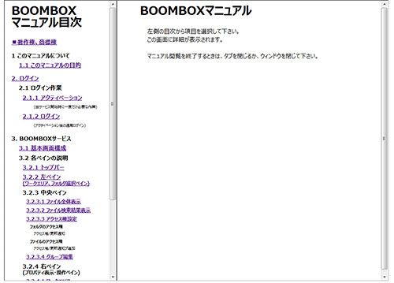

SecretFilesマニュアル
3. SecretFilesサービス
3.5 マニュアル(ヘルプ)
メインのタイトルバーに表示されている「マニュアル」ボタンをクリックすると、このサービスのマニュアルを参照することができます。
マニュアルページは、ブラウザの設定によって異なりますが、別ウィンドウまたは別タブに表示されます。

画面の左側に目次が表示され、右側に該当する項目の詳細が表示されます。
目次を選択すると、右側の詳細表示画面が該当のものに変わります。
マニュアル参照が必要でなくなったときには、開いているマニュアルウィンドウを閉じるかタブを閉じてください。